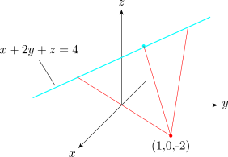

1.5 Maximum and Minimum Values
Definition 1.5.1. A function \(f\) of two variables has a local maximum at \((a,b)\) if \(f(x,y)\leq f(a,b)\) for all \((x,y)\) in some disc centred at \((a,b)\); the number \(f(a,b)\) is a local maximum value. If instead \(f(x,y)\geq f(a,b)\) on such a disc, \(f\) has a local minimum at \((a,b)\). If the inequality holds for all \((x,y)\) in the domain, the maximum or minimum is absolute.
Theorem 1.5.2. If \(f\) has a local maximum or minimum at \((a,b)\) and the first partial derivatives of \(f\) exist there, then \[f_x(a,b) = 0 ,\qquad f_y(a,b) = 0 .\]
Proof. The function of one variable \(g(x) = f(x,b)\) has a local maximum or minimum at \(x = a\), so \(g'(a) = 0\) by the one-variable result; but \(g'(a) = f_x(a,b)\). The same argument with \(h(y) = f(a,y)\) gives \(f_y(a,b) = 0\). □
A point \((a,b)\) at which \(f_x(a,b)=0\) and \(f_y(a,b) =0\), or at which one of the partial derivatives does not exist, is a critical point (or stationary point when both derivatives vanish). Theorem 1.5.2 says that local extrema occur only at critical points. The converse is false: at a critical point a function may have a maximum, a minimum, or neither, as the next two examples show.
Solution. \[f_x = 2x -2 = 0 ,\qquad f_y = 2y - 6 =0 ,\] so \((1,3)\) is the only critical point. Completing the squares, \[f(x,y) = (x-1)^2 + (y-3)^2 + 4 .\] Both squares are non-negative, so \(f(x,y)\geq 4 = f(1,3)\) for all \((x,y)\). The point \((1,3)\) is a local minimum, and in fact an absolute minimum: the graph is a paraboloid with vertex \((1,3,4)\).
Solution. \(f_x = -2x\) and \(f_y = 2y\) vanish only at \((0,0)\), where \(f = 0\). On the \(x\)-axis, \(f(x,0) = -x^2 <0\) for \(x\neq 0\); on the \(y\)-axis, \(f(0,y) = y^2> 0\) for \(y\neq 0\). So every disc about the origin contains points where \(f\) is above \(0\) and points where it is below, and \(f(0,0) = 0\) is neither a maximum nor a minimum. The surface is a hyperbolic paraboloid, and the origin is a saddle point: a maximum along one axis and a minimum along the other.
Second Derivative Test
Theorem 1.5.5 (Second derivative test). Suppose the second partial derivatives of \(f\) are continuous on a disc centred at \((a,b)\), and that \(f_x(a,b)=0\) and \(f_y(a,b) =0\). Let \[D = D(a,b) = \begin {vmatrix} f_{xx} & f_{xy}\\ f_{xy} & f_{yy}\end {vmatrix} = f_{xx}(a,b)f_{yy}(a,b) -f_{xy}(a,b)^2 .\]
- 1.
- If \(D> 0\) and \(f_{xx}(a,b)>0\), then \(f(a,b)\) is a local minimum.
- 2.
- If \(D>0\) and \(f_{xx}(a,b)<0\), then \(f(a,b)\) is a local maximum.
- 3.
- If \(D<0\), then \((a,b)\) is a saddle point: \(f(a,b)\) is neither a maximum nor a minimum.
If \(D = 0\) the test gives no information.
Proof. Fix a direction \((h,k)\) and put \(g(t) = f(a+th,b+tk)\). By the chain rule (the subsection on composite functions), \[g'(t) = f_x h + f_y k,\qquad g''(t) = f_{xx}h^2 + 2f_{xy}hk + f_{yy}k^2 = Q(h,k),\] with the derivatives evaluated at \((a+th,b+tk)\). When \(f_{xx}\neq 0\), completing the square gives \[f_{xx}\,Q(h,k) = (f_{xx}h + f_{xy}k)^2 + (f_{xx}f_{yy} - f_{xy}^2)\,k^2 .\]
Suppose \(D>0\) and \(f_{xx}(a,b)>0\). By continuity of the second derivatives, \(f_{xx}>0\) and \(f_{xx}f_{yy} - f_{xy}^2>0\) on some smaller disc \(B\) about \((a,b)\). On \(B\) both terms on the right are non-negative and they are not both zero unless \(h = k = 0\), so \(Q(h,k)>0\). Now let \((a+h,b+k)\) be any other point of \(B\). Then \(g'(0) = f_x(a,b)h + f_y(a,b)k = 0\) and \(g''(t)>0\) for \(0\leq t\leq 1\), so \(g'\) is increasing, \(g'(t)>0\) for \(0<t\leq 1\), and \(g(1)>g(0)\); that is, \(f(a+h,b+k)>f(a,b)\). This proves part 1, and part 2 follows by applying it to \(-f\).
If \(D<0\), then \(Q(1,0) = f_{xx}(a,b)\) and \(Q(-f_{xy},f_{xx}) = f_{xx}D\) have opposite signs when \(f_{xx}(a,b)\neq 0\) (and if \(f_{xx}(a,b) = 0\), then \(f_{xy}(a,b)\neq 0\) and \(Q(1,s)\) takes both signs for suitable \(s\)). So \(g''(0)>0\) in one direction and \(g''(0)<0\) in another: along the first line \(f\) has a strict local minimum at \((a,b)\), along the second a strict local maximum, and \((a,b)\) is a saddle point. □
The quantity \(Q(h,k)\) is the second-order term of the Taylor expansion of the subsection on Taylor’s formula, so the test says that near a critical point the function looks like the quadratic \(Q\): a bowl when \(D>0\) and \(f_{xx}>0\), an inverted bowl when \(D>0\) and \(f_{xx}<0\), and a saddle when \(D<0\).
Example 1.5.6. Find the local maximum and minimum values and saddle points of \[f(x,y) = x^4 + y^4 - 4xy + 1 .\]
Solution. \[f_x = 4x^3 - 4y =0,\qquad f_y = 4y^3 - 4x =0 ,\] so \(y =x^3\) and \(x = y^3\). Substituting the first into the second, \[0 = x^9 -x = x(x^8 -1) = x(x^4 + 1)(x^2 + 1)(x + 1)(x -1),\] whose real roots are \(x = 0, 1, -1\), with \(y = x^3 = 0, 1, -1\). The critical points are \((0,0)\), \((1,1)\) and \((-1,-1)\). The second derivatives are \[f_{xx} = 12x^2,\qquad f_{xy} = -4,\qquad f_{yy} = 12y^2,\qquad D = 144x^2y^2 - 16 .\]
- \(-\)
- At \((0,0)\), \(D = -16<0\): a saddle point, with \(f(0,0) = 1\).
- \(-\)
- At \((1,1)\), \(D = 128>0\) and \(f_{xx} = 12>0\): a local minimum, with \(f(1,1) = -1\).
- \(-\)
- At \((-1,-1)\), \(D = 128>0\) and \(f_{xx} = 12>0\): a local minimum, with \(f(-1,-1) = -1\).
Example 1.5.7. Find the shortest distance from the point \((1,0,-2)\) to the plane \(x + 2y + z = 4\).
Solution. A point of the plane has \(z = 4 - x - 2y\), and its distance from \((1,0,-2)\) is \[d = \sqrt {(x-1)^2 + y^2 + (6-x-2y)^2} .\] It is simpler to minimise \(f = d^2\), which has its minimum at the same point: \[f(x,y) = (x-1)^2 + y^2 + (6-x-2y)^2 .\] Then \[f_x = 2(x -1) -2(6 - x -2y) = 4x + 4y - 14,\qquad f_y = 2y - 4(6 - x - 2y) = 4x + 10y - 24 .\] Setting both to zero and subtracting gives \(6y = 10\), so \(y = \frac 53\) and \(x = \frac {11}{6}\). Here \(f_{xx} = 4\), \(f_{yy} = 10\), \(f_{xy} = 4\) and \(D = 40 - 16 = 24 >0\) with \(f_{xx}>0\), a local minimum, and geometrically it must be the absolute minimum. At this point \(6 - x - 2y = \frac 56\), so \[d^2 = \left (\frac 56\right )^2 + \left (\frac 53\right )^2 + \left (\frac 56\right )^2 = \frac {25}{6},\qquad d = \frac {5}{\sqrt 6} = \frac {5\sqrt 6}{6}\approx 2.04 .\] The nearest point of the plane is \(\left (\frac {11}{6},\frac 53,-\frac 76\right )\). As a check, the formula for the distance from a point to a plane gives \(\frac {|1 + 0 - 2 - 4|}{\sqrt {1+4+1}} = \frac {5}{\sqrt 6}\).

Example 1.5.8. Show that the second derivative test fails at the origin for both \(f(x,y) = x^4 + y^4\) and \(g(x,y) = x^4 - y^4\), and classify the origin for each.
Solution. All first and second partial derivatives of both functions vanish at the origin, so \(D = 0\) for each and the test is silent. Directly: \(f(x,y)>0 = f(0,0)\) for \((x,y)\neq (0,0)\), so \(f\) has an absolute minimum at the origin, while \(g(x,0) = x^4>0\) and \(g(0,y) = -y^4<0\), so \(g\) has a saddle point. Two functions with the same second derivatives at a point can behave differently there, which is why \(D = 0\) must be reported as inconclusive.
Solution. \(f_x = 3x^2 - 3 = 0\) gives \(x = \pm 1\), and \(f_y = 2y - 4 = 0\) gives \(y = 2\). With \(f_{xx} = 6x\), \(f_{yy} = 2\) and \(f_{xy} = 0\), \(D = 12x\).
- \(-\)
- At \((1,2)\): \(D = 12>0\) and \(f_{xx} = 6>0\), a local minimum, with \(f(1,2) = 1 - 3 + 4 - 8 = -6\).
- \(-\)
- At \((-1,2)\): \(D = -12<0\), a saddle point, with \(f(-1,2) = -1 + 3 + 4 - 8 = -2\).
The local minimum is not absolute: \(f(x,2) = x^3 - 3x - 4\to -\infty \) as \(x\to -\infty \).
Questions on this section
Stuck on something here? Ask below and it stays attached to this topic.